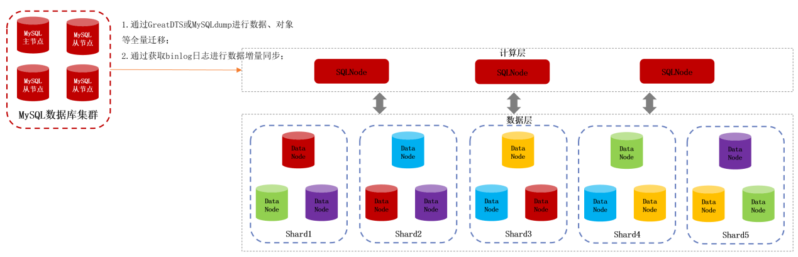

解决方案 | 最低成本替换MySQL！万里分布式数据库为城商行外审系统提升性能超200%
随着国家信息安全战略深入实施，金融行业对IT基础设施的自主可控性提出更高要求。某城商行作为重要的地方性金融机构，在日益复杂的网络环境和数据安全挑战下，决定进行数据库国产化替换，逐步替换原使用的国外数据库，以增强数据安全性、降低技术风险，提升自主创新能力。
外部审计系统主要服务于银行的外部审计活动，由大型会计师事务所或国家审计机关专业审计师/审计机构执行，是评估和验证财务报告准确性、可靠性的一种独立于审计实体之外的审计活动，因此对数据准确性及系统流程要求较为严格。
外部审计系统对数据库有哪些需求？
该城商行外部审计系统长期以来依赖国外数据库，在数据库国产替代方面有以下迫切需求：
国产替代：外部审计系统需实施全栈国产化，要求新选用的国产数据库可以适配全国产架构，对国产CPU、服务器和操作系统有优异的兼容性；
易迁移：外部审计系统原使用MySQL开源数据库，因此要求数据库高度兼容MySQL，将业务应用改造工作和成本降到最低，最终实现数据库的平滑迁移；
数据安全与合规性：面对复杂国际形势与不确定性，该城商行希望加强数据安全主权、实现数据本地化存储，确保符合国家法律法规要求；
技术自主可控：减少对国外技术的依赖，提升银行IT系统的自主可控能力，增强系统稳定性和安全性；
服务响应与定制化需求：该行希望享受原厂售后服务保障，缩短故障响应时间，并能满足银行特定业务场景下的定制化开发需求。
诸多替换难点出现 分布式架构性能提升超200%
将银行外部审计系统由传统的集中式架构数据库替换成国产分布式数据库，面临着一系列技术和业务挑战。
01 数据一致性与完整性
分布式数据库的设计需考虑数据一致性，在分布式环境下保证事务的原子性、一致性、隔离性和持久性；
02 业务连续性与风险控制
迁移期间要确保业务连续性、避免服务中断，这对银行的日常运营至关重要，需要制定详尽的回滚计划，以防迁移失败或出现不可预见的问题；
03 性能与稳定性
分布式数据库的查询性能可能受到网络延迟和数据分布策略的影响，因此要求对新系统的性能进行严格测试，确保可以承受高峰时期负载量；
04 数据迁移与同步
大量历史数据的迁移工作需要不少时间，且迁移过程要保持数据的实时同步，以免造成数据丢失或不一致。同时，在数据模型发生变化等情况下，数据转换和清洗也可能成为瓶颈。
针对以上多重挑战，万里数据库制定针对性解决方案，采用5套分布式数据库节点进行部署，其中计算节点与数据节点复用，将数据分成5个shard分片，每个shard分片做三副本保存。

▲ 某城商行外审系统数据库部署方案架构图
1、数据一致性与完整性：万里分布式数据库GreatDB Cluster事务管理机制采用两阶段提交（2PC）进行事务处理，数据的一致性采用paxos保证多副本的数据强一致。定期执行数据校验，使用一致性哈希等算法检测数据一致性问题，并自动修复或标记异常数据；
2、业务连续性与风险控制：万里分布式数据库GreatDB Cluster将数据按一定规则进行分片，将分片分区部署到多个数据节点,迁移过程分多个小步骤逐步替换模块，减少整体风险；
3、性能与稳定性：万里分布式数据库GreatDB Cluster通过性能基准测试、优化数据分布策略、负载均衡与故障恢复等技术手段保障系统性能与稳定性；
4、数据迁移与同步：采用增量数据迁移策略，先迁移静态数据，然后通过日志或CDC（Change Data Capture）技术实时同步变动数据。
万里分布式数据库部署方案通过增加节点即可轻松扩展系统容量，无需对现有系统进行大规模重构，即可提供更低的延迟和更高的吞吐量，TPS提升超200%，达到5000+；查询响应时间缩短超60%，尤其是处理大数据集和复杂查询时优势明显。万里分布式数据库提供数据复制和冗余存储，可容忍副本、节点故障而不影响整个系统运行。
整体而言，从集中式架构转向分布式架构，能显著提升系统性能、可用性，降低成本，同时增强灵活性和扩展能力，这些都是现代银行和金融机构所追求的重要目标。
方案价值
01 强数据处理能力
分布式数据库通过水平扩展，能处理更大数据量和更高并发请求，这对于需要分析大量交易数据的审计系统而言尤为重要，可为系统提供更快的查询响应速度，有助于实时审计和快速决策；
02 提升系统可用性和可靠性
分布式架构天然具备高可用性，即使部分节点失效，通过数据冗余和故障切换机制也能保障系统持续稳定运行，保障审计工作的连续性，更好应对突发的高负载情况，确保系统稳定运行；
03 加强数据安全和合规性
国产数据库通常拥有更完善的本土化支持能力，更能满足国内法律法规要求，如数据本地化存储。万里分布式数据库提供更细粒度的权限控制和审计功能，有助于满足银行业严格的合规需求；
04 降低运维成本
相较于昂贵的大型机和高端存储设备，分布式数据库可以部署在低成本的商用硬件上，降低硬件投入成本。同时，自动化数据分片和负载均衡减少了人工干预，降低运维复杂度和人工成本；
05 提升用户体验
拥有更快的查询响应速度和更稳定的系统性能，可提升内部审计员和外部审计师的工作效率和用户体验，支持更多并发用户，使外审系统更易于访问和使用。
总体而言，使用万里分布式数据库解决方案，替换原有MySQL开源数据库，不仅能提升银行外部审计系统的性能和可靠性，还能降低成本，增强安全性，提升技术创新与自主性，从而为银行带来长远的发展价值。但与此同时，实现这一国产化转型同样需要周密的方案规划和实施部署，方能确保外审系统的平稳过渡，实现收益最大化。